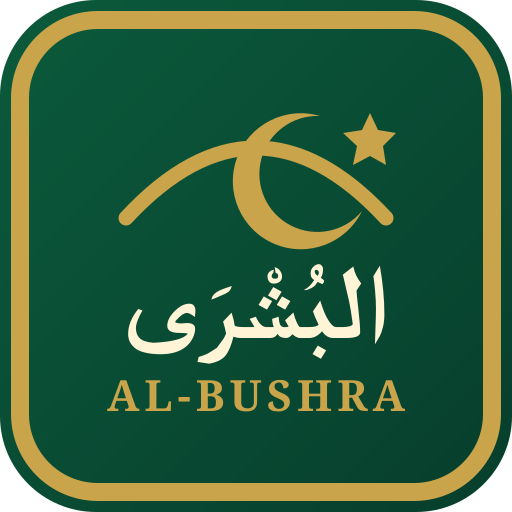

Good news that makes the Ummah say Alḥamdulillāh.
Verified Islamic progress, Qur’an and ḥuffāẓ, mosques, daʿwah, Islamic education, Muslim achievers, young Muslim stars, charity, cooperation and practical ideas communities can copy.

The Good News of the Ummah
Verified Islamic progress, Qur’an and ḥuffāẓ, mosques, daʿwah, Islamic education, Muslim achievers, young Muslim stars, charity, cooperation and practical ideas communities can copy.